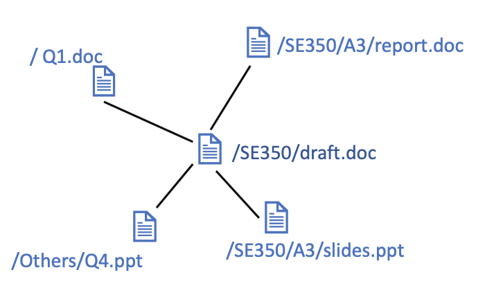

<!-- Modal that pops up when you click on image icon" -->
<div id="file-relation-popup" class="w3-modal" style="z-index:4; display: block">
	<div class="w3-modal-content" style="padding-top: 50px; padding-right: 20px; padding-left: 20px">
		<i id="back-icon" class="fas fa-arrow-left w3-xlarge icon" onclick="showAllGraphs()"></i>

		<div class="w3-container" style="background-color:white; box-shadow: 0px 8px 16px 0px rgba(0,0,0,0.2);">
			<div id="draft-related-graph-container" class="w3-cell">
				<p>Files related to draft.doc:</p>
				<button class="graph-container" onclick="showDraftGraphOnly()">
					
				</button>
			</div>

			<div id="slide-related-graph-container" class="w3-cell">
				<p>File related to slides.ppt:</p>
				<button class="graph-container">
					
				</button>
			</div>


		</div>

		<div class="w3-panel">
			<p style="margin-bottom: 0">In Folder SE350</p>
			<div class="w3-section w3-right">
				<a class="w3-button w3-blue" onclick="hideFileRelationGraph()">Close</i></a>
				<a class="w3-button w3-blue" onclick="hideFileRelationGraph()">Share<i class="fa fa-paper-plane" style="margin: auto 5px"></i></a>
			</div>
		</div>
	</div>
</div>